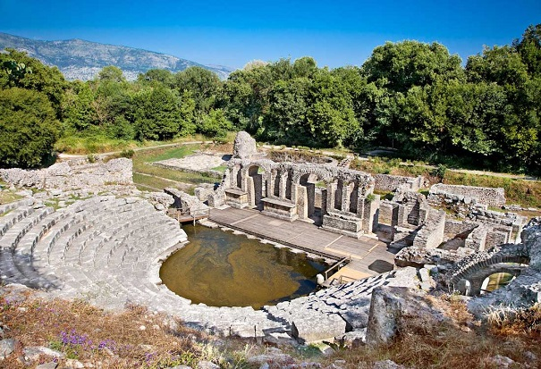
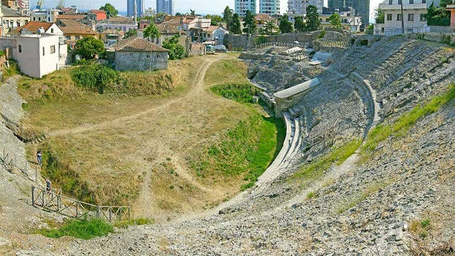

ALBANIA
|
Los orígenes de la actual Albania se remontan al reino de Iliria. En el siglo III a.e.c las legiones romanas derrotaron a los ilirios. Se convirtió en provincia romana en el 168 a.e.c. El emperador Justiniano I era de origen ilirio. De los restos de época romana en Albania, destacan: - El Parque Arqueológico de Apollonia. Ciudad de origen griego. Destaca su Parque Arqueológico con su Bouleuterion del siglo II a.e.c. -Las Tumbas Reales de Selca e Poshtme. - El área arqueológica de Butrinto con su Teatro romano.
 foto: turismodealbania.es - El yacimiento arqueológico de Byllis. - Durrës es la segunda ciudad más poblada del país. Fue fundada por colonos griegos de Corcira (actual Corfú), que la llamaron Epidamno, en el año 627 a..e.c. y renombrada Dirraquio (Dyrrhachium) por los romanos. Destaca su anfitetro que junto al de Pula en Croacia, uno de los mayores y mejor conservados anfiteatros romanos de los Balcanes. Fue construido a principios del siglo II en época de Trajano. La extensión de su elipse es de 132m de largo, por 113m de ancho, y en sus gradas entraban entre quince y veinte mil espectadores aproximadamente. También destacamos sus Termas romanas, sus Villas, los restos del Acueducto y el Museo Arqueológico.
 foto: turismodealbania.es - La antigua ciudad de Lissos en Lezhë. - Adrianópolis, ubicada a unos 13 km al sureste de Gjirokastër, el emperador Adriano fundó una nueva ciudad en este lugar y la nombró en su honor sobre un asentamiento de época helenística. - Amantia y su antiguo Estadio. - El Parque Arqueológico de Oricum. - El Parque Arqueológico de Shkodër y los mosaicos romanos de Tirana.
Más info:
Yacimientos arqueológicos en Albania - Turismo Albania |